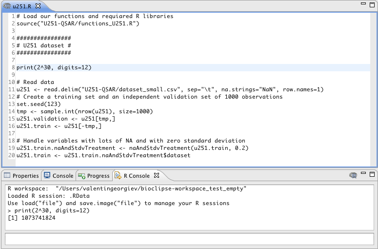
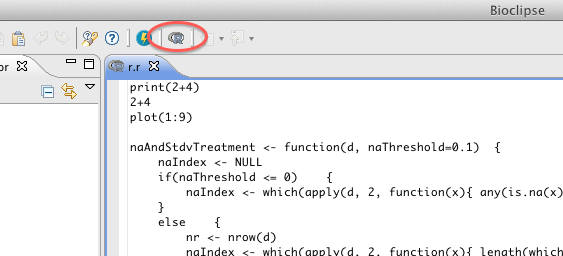
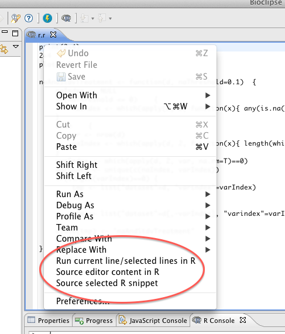

"Open With > R Editor".
The R Editor is, as all Editors in Bioclipse, hooked up to global actions such as Copy, Paste, Undo, Redo, Select all, Find etc.


This button will effectively source the opened file in R manner (like running source("file_open_in_editor")).

Run current line/selected lines in R runs the current line or a selection line-by-line and auto-prints the output in the R console.
Source editor content in R sources the editor content without output auto-printing, and the echoes the submitted code in the R console.
Source selected R snippet will source a selected snippet so that the complete code is parsed before it is run. This menu action should be used for submitting R functions and blocks of code.